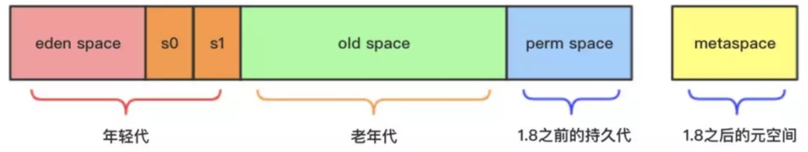
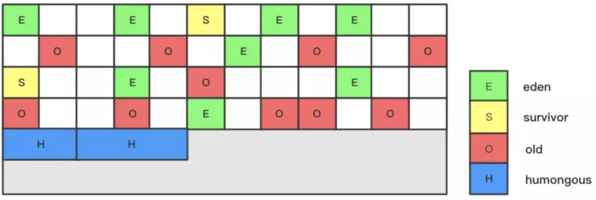
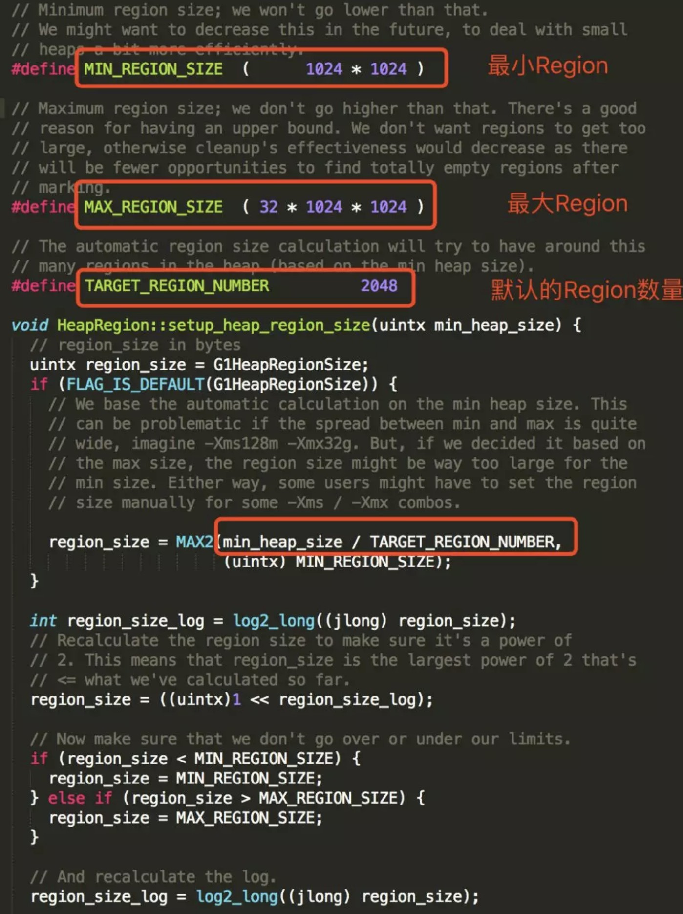

为解决CMS算法产生空间碎片和其它一系列的问题缺陷，HotSpot提供了另外一种垃圾回收策略，G1（Garbage First）算法，通过参数 -XX:+UseG1GC来启用，该算法在JDK 7u4版本被正式推出，官网对此描述如下：
G1垃圾收集算法主要应用在多CPU大内存的服务中，在满足高吞吐量的同时，竟可能的满足垃圾回收时的暂停时间，该设计主要针对如下应用场景：
- 垃圾收集线程和应用线程并发执行，和CMS一样
- 空闲内存压缩时避免冗长的暂停时间
- 应用需要更多可预测的GC暂停时间
- 不希望牺牲太多的吞吐性能
- 不需要很大的Java堆
堆内存结构
1、以往的垃圾回收算法，如CMS，使用的堆内存结构如下：

- 新生代：eden space + 2个survivor
- 老年代：old space
- 持久代：1.8之前的perm space
- 元空间：1.8之后的metaspace
这些space必须是地址连续的空间
2、在G1算法中，采用了另外一种完全不同的方式组织堆内存，堆内存被划分为多个大小相等的内存块（Region），每个Region是逻辑连续的一段内存，结构如下：

每个Region被标记了E、S、O和H，说明每个Region在运行时都充当了一种角色，其中H是以往算法中没有的，它代表Humongous，这表示这些Region存储的是巨型对象（humongous object，H-obj），当新建对象大小超过Region大小一半时，直接在新的一个或多个连续Region中分配，并标记为H
Region
堆内存中一个Region的大小可以通过 -XX:G1HeapRegionSize参数指定，大小区间只能是1M、2M、4M、8M、16M和32M，总之是2的幂次方，如果G1HeapRegionSize为默认值，则在堆初始化时计算Region的实践大小，具体实现如下：

默认把堆内存按照2048份均分，最后得到一个合理的大小。
GC模式
G1中提供了三种模式垃圾回收模式，young gc、mixed gc 和 full gc，在不同的条件下被触发。
young gc
发生在年轻代的GC算法，一般对象（除了巨型对象）都是在eden region中分配内存，当所有eden region被耗尽无法申请内存时，就会触发一次young gc，这种触发机制和之前的young gc差不多，执行完一次young gc，活跃对象会被拷贝到survivor region或者晋升到old region中，空闲的region会被放入空闲列表中，等待下次被使用。
| 参数 | 含义 |
|---|---|
| -XX:MaxGCPauseMillis | 设置G1收集过程目标时间，默认值200ms |
| -XX:G1NewSizePercent | 新生代最小值，默认值5% |
| -XX:G1MaxNewSizePercent | 新生代最大值，默认值60% |
mixed gc
当越来越多的对象晋升到老年代old region时，为了避免堆内存被耗尽，虚拟机会触发一个混合的垃圾收集器，即mixed gc，该算法并不是一个old gc，除了回收整个young region，还会回收一部分的old region，这里需要注意：是一部分老年代，而不是全部老年代，可以选择哪些old region进行收集，从而可以对垃圾回收的耗时时间进行控制。
那么mixed gc什么时候被触发？
先回顾一下cms的触发机制，如果添加了以下参数：
当老年代的使用率达到80%时，就会触发一次cms gc。
相对的，mixed gc中也有一个阈值参数 -XX:InitiatingHeapOccupancyPercent，当老年代大小占整个堆大小百分比达到该阈值时，会触发一次mixed gc.
mixed gc的执行过程有点类似cms，主要分为以下几个步骤：
- initial mark: 初始标记过程，整个过程STW，标记了从GC Root可达的对象
- concurrent marking: 并发标记过程，整个过程gc collector线程与应用线程可以并行执行，标记出GC Root可达对象衍生出去的存活对象，并收集各个Region的存活对象信息
- remark: 最终标记过程，整个过程STW，标记出那些在并发标记过程中遗漏的，或者内部引用发生变化的对象
- clean up: 垃圾清除过程，如果发现一个Region中没有存活对象，则把该Region加入到空闲列表中
full gc
如果对象内存分配速度过快，mixed gc来不及回收，导致老年代被填满，就会触发一次full gc，G1的full gc算法就是单线程执行的serial old gc，会导致异常长时间的暂停时间，需要进行不断的调优，尽可能的避免full gc.